Krummhörn main effects
Loading details
library(data.table); library(ggplot2); library(knitr); library(lme4); library(blme)
opts_chunk$set(warning=TRUE, cache=T,tidy=FALSE,autodep=TRUE,dev=c('png','pdf'),fig.width=20,fig.height=12.5,out.width='1440px',out.height='900px',cache.extra=file.info('krmh.rdata')[, 'mtime'])
source("0__helpers.R")
load("krmh.rdata")
Analysis description
Data subset
The krmh.1 dataset contains only those participants where paternal age is known, the birthdate is between 1720 and 1850 and the marriage is known (meaning we know when it started and how it ended by spousal death). In known marriages we can assume that missing death dates for the kids mean that they migrated out.
Model description
All of the following models have the following in common:
Multivariate normal prior
Using the R package blme which provides a thin Bayesian wrapper around lme4, we define a weak multivariate normal prior on the fixed effects. Especially in models where we have many covariates and the outcome has little variability (e.g. child mortality in modern Sweden), this helps us to combat complete separation and the Hauck-Donner effect. In the absence of these conditions, the extremely weak prior (SD = 9) leads to results that are identical or very similar to the standard lme4 models.
Optimizer settings
Bobyqa is fairly robust to convergence failures. In addition to using Bobyqa, we center some variables that otherwise lead to large eigenvalues.
control_defaults = glmerControl(optimizer = "bobyqa")
Main predictor
The main predictor, paternal age, has been binned into meaningful bins. This way, we let the data speak and can see whether the shape of the relationship is consistent with a linear effect. To this end we plot a linear regression through the best estimates for each factor (inversely weighted by confidence interval width, i.e. certainty). Even if a nonlinear fit might be slightly better, our theory clearly predicts a linear fit, so we are satisfied it the data is consistent with a linear effect.
formr::crosstabs(krmh.1$paternalage.factor)
## krmh.1$paternalage.factor
## [0,25] (25,30] (30,35] (35,40] (40,45] (45,50] (50,55] (55,90]
## 987 3521 4280 3556 2275 1138 473 203
Covariates
As in our main models, we control for birth.cohort (birth years in five equally large bins), male sex. Additionally, we control for paternal and maternal loss (whether either parent died within 5 years of the birth), for maternal age (bins of 14-20, 20-35 and 35-50), the number of siblings.
Model stratification
We added random intercepts for each family (father-mother dyad). We then controlled for the average paternal age in the family. Hence, the paternal age effects in the plot are split into those between families and those within families or between siblings. The relevant effect for our hypothesized mechanism, de novo mutations, is paternal age between siblings.
Episodes of selection
Here, episodes of selection refers to survival, mating success, reproductive success. To steer clear of sacrificial pseudo-replication, we make sure that each effect cannot be explained by the episode of selection preceding it. At its simplest, we check for effect on survival to reproduction only among those who lived to their first birthday. In later models, we look for an effect on number of children only among those who married and control their number of spouses.
Survival to first year
Survive_infancy <- bglmer(
survive1y ~ maternalage.factor + paternalloss + maternalloss + center(nr.siblings) + birth.cohort + male + paternalage.mean + paternalage.factor + (1|idParents),
data= krmh.1,
family = 'binomial', control = control_defaults,
fixef.prior = normal() )
summary(Survive_infancy)
## Cov prior : idParents ~ wishart(df = 3.5, scale = Inf, posterior.scale = cov, common.scale = TRUE)
## Fixef prior: normal(sd = c(10, 2.5, ...), corr = c(0 ...), common.scale = FALSE)
## Prior dev : 75
##
## Generalized linear mixed model fit by maximum likelihood (Laplace
## Approximation) [bglmerMod]
## Family: binomial ( logit )
## Formula: survive1y ~ maternalage.factor + paternalloss + maternalloss +
## center(nr.siblings) + birth.cohort + male + paternalage.mean +
## paternalage.factor + (1 | idParents)
## Data: krmh.1
## Control: control_defaults
##
## AIC BIC logLik deviance df.resid
## 8095 8242 -4027 8055 11485
##
## Scaled residuals:
## Min 1Q Median 3Q Max
## -3.986 0.264 0.312 0.363 0.843
##
## Random effects:
## Groups Name Variance Std.Dev.
## idParents (Intercept) 0.286 0.534
## Number of obs: 11505, groups: idParents, 2612
##
## Fixed effects:
## Estimate Std. Error z value Pr(>|z|)
## (Intercept) 1.98460 0.15467 12.83 < 2e-16 ***
## maternalage.factor(14,20] -0.28867 0.28721 -1.01 0.31485
## maternalage.factor(35,50] -0.12780 0.09161 -1.40 0.16299
## paternallossTRUE -0.21689 0.12507 -1.73 0.08289 .
## maternallossTRUE -0.77447 0.10820 -7.16 8.2e-13 ***
## center(nr.siblings) -0.08670 0.01345 -6.45 1.2e-10 ***
## birth.cohort(1773,1796] -0.10965 0.10546 -1.04 0.29845
## birth.cohort(1796,1814] 0.03072 0.10496 0.29 0.76978
## birth.cohort(1814,1830] 0.38485 0.10769 3.57 0.00035 ***
## birth.cohort(1830,1850] 0.43518 0.11101 3.92 8.8e-05 ***
## male -0.17900 0.06180 -2.90 0.00378 **
## paternalage.mean -0.00283 0.09911 -0.03 0.97725
## paternalage.factor(25,30] 0.15081 0.13878 1.09 0.27717
## paternalage.factor(30,35] 0.28650 0.14674 1.95 0.05089 .
## paternalage.factor(35,40] 0.25040 0.16662 1.50 0.13289
## paternalage.factor(40,45] 0.33487 0.19838 1.69 0.09141 .
## paternalage.factor(45,50] 0.37218 0.24273 1.53 0.12519
## paternalage.factor(50,55] 0.16904 0.30459 0.55 0.57890
## paternalage.factor(55,90] 0.14307 0.41128 0.35 0.72795
## ---
## Signif. codes: 0 '***' 0.001 '**' 0.01 '*' 0.05 '.' 0.1 ' ' 1
##
## Correlation of Fixed Effects:
## (Intr) m.(14, m.(35, ptTRUE mtTRUE cnt(.) b.(177 b.(179 b.(181
## mtr.(14,20] -0.164
## mtr.(35,50] 0.201 -0.035
## ptrnllsTRUE 0.026 -0.022 0.042
## mtrnllsTRUE 0.010 -0.008 0.083 0.007
## cntr(nr.sb) -0.053 -0.034 -0.025 0.151 0.241
## b.(1773,179 -0.366 0.014 -0.049 0.000 0.023 0.048
## b.(1796,181 -0.398 0.004 -0.045 0.008 0.044 0.051 0.588
## b.(1814,183 -0.372 0.004 -0.026 0.012 0.056 0.040 0.559 0.589
## b.(1830,185 -0.334 0.014 -0.071 0.026 0.046 0.084 0.552 0.568 0.564
## male -0.231 0.015 -0.014 0.006 -0.009 0.008 0.003 0.011 0.022
## paternlg.mn 0.382 -0.094 0.472 0.145 0.223 -0.064 -0.026 -0.022 0.019
## ptr.(25,30] -0.732 0.112 -0.112 -0.038 -0.054 0.002 -0.016 0.007 -0.013
## ptr.(30,35] -0.764 0.142 -0.247 -0.081 -0.107 -0.011 -0.025 0.000 -0.019
## ptr.(35,40] -0.743 0.157 -0.414 -0.116 -0.153 -0.035 -0.021 -0.004 -0.026
## ptr.(40,45] -0.688 0.152 -0.508 -0.143 -0.170 -0.040 -0.015 -0.010 -0.030
## ptr.(45,50] -0.620 0.140 -0.521 -0.147 -0.164 -0.030 -0.012 -0.003 -0.034
## ptr.(50,55] -0.548 0.126 -0.498 -0.141 -0.177 -0.017 -0.011 -0.013 -0.037
## ptr.(55,90] -0.462 0.107 -0.437 -0.144 -0.147 0.013 0.000 -0.005 -0.042
## b.(183 male ptrnl. p.(25, p.(30, p.(35, p.(40, p.(45, p.(50,
## mtr.(14,20]
## mtr.(35,50]
## ptrnllsTRUE
## mtrnllsTRUE
## cntr(nr.sb)
## b.(1773,179
## b.(1796,181
## b.(1814,183
## b.(1830,185
## male 0.021
## paternlg.mn 0.004 -0.006
## ptr.(25,30] -0.027 -0.001 -0.216
## ptr.(30,35] -0.052 0.004 -0.395 0.779
## ptr.(35,40] -0.062 0.009 -0.536 0.731 0.815
## ptr.(40,45] -0.055 0.012 -0.621 0.653 0.761 0.825
## ptr.(45,50] -0.049 0.005 -0.662 0.568 0.686 0.766 0.784
## ptr.(50,55] -0.047 0.010 -0.678 0.484 0.607 0.694 0.722 0.708
## ptr.(55,90] -0.035 -0.002 -0.657 0.391 0.509 0.594 0.627 0.623 0.605
Survive_infancy_coefs = fortify_mine(Survive_infancy)
plot_fortified_mer(Survive_infancy_coefs, "Surviving infancy / first year")

Survive_infancy_boot = plot_factor_response(Survive_infancy)
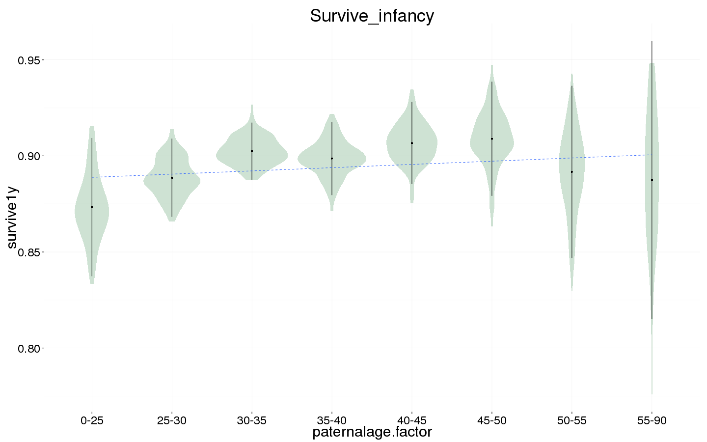
Survival to reproductive age
Survive_reproductive <- bglmer(
surviveR ~ maternalage.factor + paternalloss + maternalloss + center(nr.siblings) + birth.cohort + male + paternalage.mean + paternalage.factor + (1|idParents),
data= krmh.1, subset = survive1y == TRUE & byear < 1845,
family = 'binomial', control = control_defaults,
fixef.prior = normal() )
summary(Survive_reproductive)
## Cov prior : idParents ~ wishart(df = 3.5, scale = Inf, posterior.scale = cov, common.scale = TRUE)
## Fixef prior: normal(sd = c(10, 2.5, ...), corr = c(0 ...), common.scale = FALSE)
## Prior dev : 75
##
## Generalized linear mixed model fit by maximum likelihood (Laplace
## Approximation) [bglmerMod]
## Family: binomial ( logit )
## Formula: surviveR ~ maternalage.factor + paternalloss + maternalloss +
## center(nr.siblings) + birth.cohort + male + paternalage.mean +
## paternalage.factor + (1 | idParents)
## Data: krmh.1
## Control: control_defaults
## Subset: survive1y == TRUE & byear < 1845
##
## AIC BIC logLik deviance df.resid
## 8263 8406 -4112 8223 9513
##
## Scaled residuals:
## Min 1Q Median 3Q Max
## -3.024 0.325 0.377 0.431 0.910
##
## Random effects:
## Groups Name Variance Std.Dev.
## idParents (Intercept) 0.297 0.545
## Number of obs: 9533, groups: idParents, 2422
##
## Fixed effects:
## Estimate Std. Error z value Pr(>|z|)
## (Intercept) 1.5258 0.1487 10.26 < 2e-16 ***
## maternalage.factor(14,20] -0.2438 0.2913 -0.84 0.40274
## maternalage.factor(35,50] -0.0814 0.0876 -0.93 0.35257
## paternallossTRUE -0.2903 0.1183 -2.45 0.01411 *
## maternallossTRUE -0.4648 0.1132 -4.10 4e-05 ***
## center(nr.siblings) -0.0397 0.0132 -3.00 0.00271 **
## birth.cohort(1773,1796] -0.0511 0.0993 -0.51 0.60716
## birth.cohort(1796,1814] 0.2258 0.1001 2.26 0.02413 *
## birth.cohort(1814,1830] 0.3780 0.0987 3.83 0.00013 ***
## birth.cohort(1830,1850] 0.5730 0.1103 5.19 2e-07 ***
## male -0.0533 0.0590 -0.90 0.36639
## paternalage.mean -0.0226 0.0953 -0.24 0.81230
## paternalage.factor(25,30] 0.1794 0.1360 1.32 0.18704
## paternalage.factor(30,35] 0.0790 0.1420 0.56 0.57809
## paternalage.factor(35,40] 0.1136 0.1617 0.70 0.48240
## paternalage.factor(40,45] 0.1241 0.1917 0.65 0.51741
## paternalage.factor(45,50] 0.1858 0.2344 0.79 0.42797
## paternalage.factor(50,55] 0.1706 0.3018 0.57 0.57185
## paternalage.factor(55,90] 0.4140 0.4337 0.95 0.33977
## ---
## Signif. codes: 0 '***' 0.001 '**' 0.01 '*' 0.05 '.' 0.1 ' ' 1
##
## Correlation of Fixed Effects:
## (Intr) m.(14, m.(35, ptTRUE mtTRUE cnt(.) b.(177 b.(179 b.(181
## mtr.(14,20] -0.164
## mtr.(35,50] 0.208 -0.038
## ptrnllsTRUE 0.037 -0.022 0.055
## mtrnllsTRUE 0.013 -0.001 0.067 0.014
## cntr(nr.sb) -0.041 -0.035 -0.027 0.157 0.204
## b.(1773,179 -0.346 0.006 -0.041 -0.001 0.016 0.058
## b.(1796,181 -0.369 -0.006 -0.046 0.013 0.029 0.065 0.572
## b.(1814,183 -0.364 0.000 -0.024 0.013 0.041 0.054 0.565 0.588
## b.(1830,185 -0.303 0.005 -0.078 0.033 0.041 0.078 0.514 0.524 0.545
## male -0.217 0.019 -0.011 0.004 -0.005 0.012 0.003 0.003 0.019
## paternlg.mn 0.381 -0.096 0.482 0.159 0.198 -0.059 -0.018 -0.020 0.017
## ptr.(25,30] -0.741 0.114 -0.115 -0.046 -0.044 0.002 -0.019 -0.001 -0.015
## ptr.(30,35] -0.786 0.148 -0.252 -0.093 -0.088 -0.002 -0.029 -0.007 -0.020
## ptr.(35,40] -0.761 0.156 -0.412 -0.130 -0.132 -0.027 -0.026 -0.006 -0.028
## ptr.(40,45] -0.708 0.155 -0.506 -0.156 -0.142 -0.032 -0.022 -0.015 -0.034
## ptr.(45,50] -0.639 0.143 -0.523 -0.164 -0.139 -0.020 -0.014 -0.008 -0.037
## ptr.(50,55] -0.547 0.125 -0.484 -0.147 -0.149 -0.011 -0.021 -0.014 -0.038
## ptr.(55,90] -0.434 0.100 -0.408 -0.149 -0.121 0.012 -0.006 -0.005 -0.039
## b.(183 male ptrnl. p.(25, p.(30, p.(35, p.(40, p.(45, p.(50,
## mtr.(14,20]
## mtr.(35,50]
## ptrnllsTRUE
## mtrnllsTRUE
## cntr(nr.sb)
## b.(1773,179
## b.(1796,181
## b.(1814,183
## b.(1830,185
## male 0.015
## paternlg.mn 0.004 -0.004
## ptr.(25,30] -0.023 -0.001 -0.208
## ptr.(30,35] -0.044 0.008 -0.392 0.786
## ptr.(35,40] -0.055 0.008 -0.534 0.733 0.826
## ptr.(40,45] -0.049 0.016 -0.622 0.657 0.773 0.831
## ptr.(45,50] -0.042 0.002 -0.670 0.571 0.699 0.773 0.794
## ptr.(50,55] -0.035 0.010 -0.661 0.473 0.598 0.678 0.708 0.697
## ptr.(55,90] -0.021 -0.001 -0.607 0.360 0.473 0.549 0.583 0.583 0.548
Survive_reproductive_coefs = fortify_mine(Survive_reproductive)
plot_fortified_mer(Survive_reproductive_coefs, "Surviving to reproductive age / 15 years")
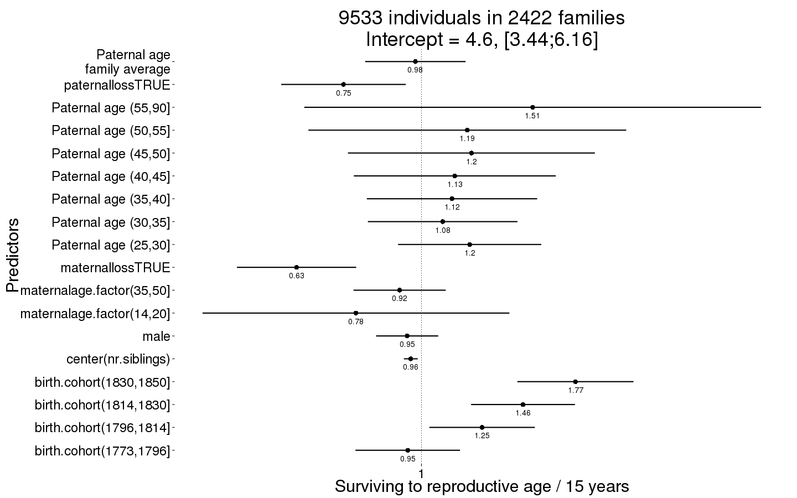
Survive_reproductive_boot = plot_factor_response(Survive_reproductive)
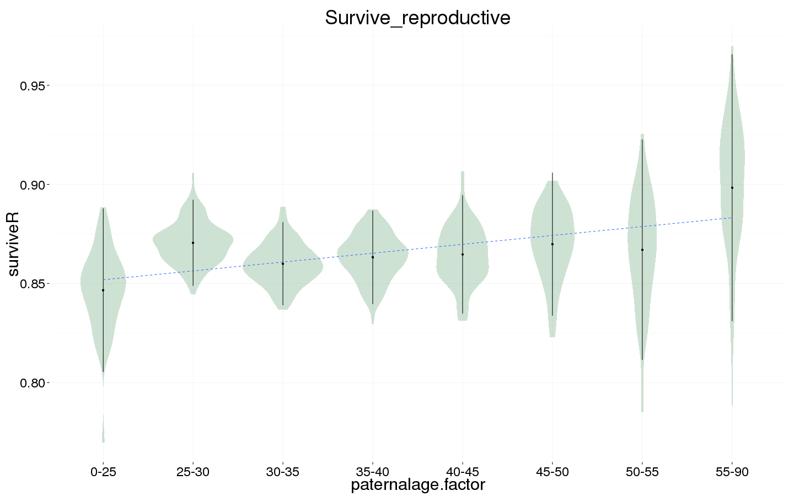
Ever married
Ever_married <- bglmer(
ever_married ~ maternalage.factor + paternalloss + maternalloss + center(nr.siblings) + birth.cohort + male + paternalage.mean + paternalage.factor + (1|idParents),
data= krmh.1, subset = surviveR == T & byear < 1835,
family = 'binomial', control = control_defaults,
fixef.prior = normal() )
summary(Ever_married)
## Cov prior : idParents ~ wishart(df = 3.5, scale = Inf, posterior.scale = cov, common.scale = TRUE)
## Fixef prior: normal(sd = c(10, 2.5, ...), corr = c(0 ...), common.scale = FALSE)
## Prior dev : 74
##
## Generalized linear mixed model fit by maximum likelihood (Laplace
## Approximation) [bglmerMod]
## Family: binomial ( logit )
## Formula:
## ever_married ~ maternalage.factor + paternalloss + maternalloss +
## center(nr.siblings) + birth.cohort + male + paternalage.mean +
## paternalage.factor + (1 | idParents)
## Data: krmh.1
## Control: control_defaults
## Subset: surviveR == T & byear < 1835
##
## AIC BIC logLik deviance df.resid
## 8810 8946 -4385 8770 6904
##
## Scaled residuals:
## Min 1Q Median 3Q Max
## -2.095 -1.045 0.559 0.702 1.631
##
## Random effects:
## Groups Name Variance Std.Dev.
## idParents (Intercept) 0.368 0.607
## Number of obs: 6924, groups: idParents, 2094
##
## Fixed effects:
## Estimate Std. Error z value Pr(>|z|)
## (Intercept) 0.45369 0.13623 3.33 0.00087 ***
## maternalage.factor(14,20] 0.27434 0.30050 0.91 0.36126
## maternalage.factor(35,50] 0.02681 0.08119 0.33 0.74128
## paternallossTRUE -0.19833 0.11329 -1.75 0.08000 .
## maternallossTRUE -0.44255 0.11290 -3.92 8.9e-05 ***
## center(nr.siblings) 0.00444 0.01260 0.35 0.72436
## birth.cohort(1773,1796] 0.36385 0.09219 3.95 7.9e-05 ***
## birth.cohort(1796,1814] 0.55759 0.08998 6.20 5.8e-10 ***
## birth.cohort(1814,1830] 0.71835 0.08779 8.18 2.8e-16 ***
## birth.cohort(1830,1850] 0.77771 0.12580 6.18 6.3e-10 ***
## male -0.46841 0.05354 -8.75 < 2e-16 ***
## paternalage.mean 0.05662 0.08702 0.65 0.51526
## paternalage.factor(25,30] 0.13259 0.12273 1.08 0.27997
## paternalage.factor(30,35] 0.02575 0.12910 0.20 0.84192
## paternalage.factor(35,40] -0.01303 0.14732 -0.09 0.92952
## paternalage.factor(40,45] -0.25604 0.17434 -1.47 0.14195
## paternalage.factor(45,50] -0.24290 0.21369 -1.14 0.25567
## paternalage.factor(50,55] -0.45074 0.27299 -1.65 0.09872 .
## paternalage.factor(55,90] -0.53252 0.36904 -1.44 0.14903
## ---
## Signif. codes: 0 '***' 0.001 '**' 0.01 '*' 0.05 '.' 0.1 ' ' 1
##
## Correlation of Fixed Effects:
## (Intr) m.(14, m.(35, ptTRUE mtTRUE cnt(.) b.(177 b.(179 b.(181
## mtr.(14,20] -0.125
## mtr.(35,50] 0.204 -0.036
## ptrnllsTRUE 0.026 -0.025 0.043
## mtrnllsTRUE 0.007 0.004 0.063 0.013
## cntr(nr.sb) -0.028 -0.022 -0.030 0.158 0.181
## b.(1773,179 -0.351 0.006 -0.037 0.008 0.022 0.053
## b.(1796,181 -0.380 -0.005 -0.038 0.027 0.028 0.071 0.583
## b.(1814,183 -0.374 0.001 -0.024 0.020 0.040 0.051 0.578 0.635
## b.(1830,185 -0.233 0.001 -0.040 0.028 0.021 0.051 0.407 0.434 0.472
## male -0.215 0.002 -0.014 0.002 0.010 0.017 -0.006 -0.013 0.000
## paternlg.mn 0.372 -0.086 0.473 0.135 0.186 -0.081 -0.017 -0.019 0.027
## ptr.(25,30] -0.746 0.081 -0.118 -0.041 -0.041 0.009 -0.006 -0.001 -0.013
## ptr.(30,35] -0.787 0.116 -0.246 -0.077 -0.078 0.004 -0.014 -0.003 -0.021
## ptr.(35,40] -0.759 0.122 -0.404 -0.114 -0.109 -0.018 -0.019 -0.004 -0.030
## ptr.(40,45] -0.705 0.127 -0.499 -0.139 -0.129 -0.019 -0.017 -0.018 -0.045
## ptr.(45,50] -0.635 0.119 -0.525 -0.141 -0.126 -0.003 -0.006 -0.013 -0.046
## ptr.(50,55] -0.545 0.104 -0.492 -0.141 -0.134 -0.001 -0.019 -0.016 -0.044
## ptr.(55,90] -0.461 0.090 -0.441 -0.137 -0.111 0.026 -0.004 -0.010 -0.052
## b.(183 male ptrnl. p.(25, p.(30, p.(35, p.(40, p.(45, p.(50,
## mtr.(14,20]
## mtr.(35,50]
## ptrnllsTRUE
## mtrnllsTRUE
## cntr(nr.sb)
## b.(1773,179
## b.(1796,181
## b.(1814,183
## b.(1830,185
## male 0.006
## paternlg.mn 0.035 -0.002
## ptr.(25,30] -0.022 -0.003 -0.208
## ptr.(30,35] -0.055 0.007 -0.388 0.796
## ptr.(35,40] -0.057 0.008 -0.524 0.739 0.824
## ptr.(40,45] -0.053 0.018 -0.616 0.664 0.772 0.826
## ptr.(45,50] -0.053 0.008 -0.663 0.576 0.696 0.767 0.792
## ptr.(50,55] -0.054 0.007 -0.658 0.480 0.600 0.678 0.711 0.703
## ptr.(55,90] -0.044 0.011 -0.646 0.388 0.504 0.582 0.622 0.624 0.596
Ever_married_coefs = fortify_mine(Ever_married)
plot_fortified_mer(Ever_married_coefs, "Odds of ever marrying")
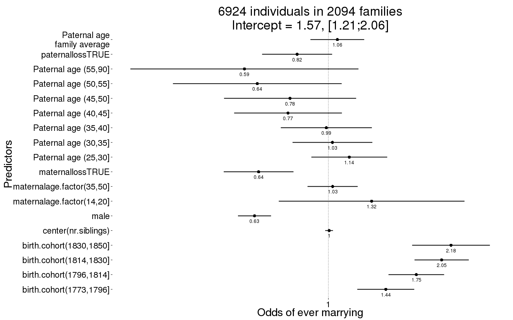
Ever_married_boot = plot_factor_response(Ever_married)
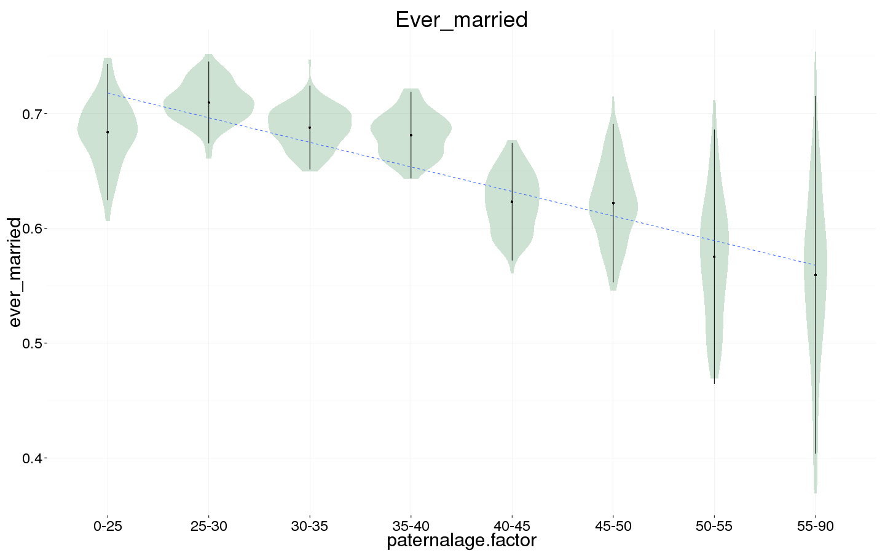
Number of children
Children <- bglmer(
children ~ maternalage.factor + paternalloss + maternalloss + center(nr.siblings) + center(spouses)*male + birth.cohort + paternalage.mean + paternalage.factor + (1|idParents) + (1|idIndividu),
data= krmh.1, subset = spouses > 0 & byear < 1835,
family = 'poisson', control = control_defaults,
fixef.prior = normal() )
summary(Children)
## Cov prior : idIndividu ~ wishart(df = 3.5, scale = Inf, posterior.scale = cov, common.scale = TRUE)
## : idParents ~ wishart(df = 3.5, scale = Inf, posterior.scale = cov, common.scale = TRUE)
## Fixef prior: normal(sd = c(10, 2.5, ...), corr = c(0 ...), common.scale = FALSE)
## Prior dev : 88
##
## Generalized linear mixed model fit by maximum likelihood (Laplace
## Approximation) [bglmerMod]
## Family: poisson ( log )
## Formula: children ~ maternalage.factor + paternalloss + maternalloss +
## center(nr.siblings) + center(spouses) * male + birth.cohort +
## paternalage.mean + paternalage.factor + (1 | idParents) +
## (1 | idIndividu)
## Data: krmh.1
## Control: control_defaults
## Subset: spouses > 0 & byear < 1835
##
## AIC BIC logLik deviance df.resid
## 21831 21978 -10892 21785 4410
##
## Scaled residuals:
## Min 1Q Median 3Q Max
## -1.565 -0.716 0.107 0.487 1.282
##
## Random effects:
## Groups Name Variance Std.Dev.
## idIndividu (Intercept) 0.3244 0.570
## idParents (Intercept) 0.0152 0.123
## Number of obs: 4433, groups: idIndividu, 4433; idParents, 1835
##
## Fixed effects:
## Estimate Std. Error z value Pr(>|z|)
## (Intercept) 1.27672 0.06777 18.84 < 2e-16 ***
## maternalage.factor(14,20] -0.15520 0.12497 -1.24 0.21427
## maternalage.factor(35,50] -0.04118 0.03640 -1.13 0.25794
## paternallossTRUE -0.04600 0.05398 -0.85 0.39411
## maternallossTRUE 0.01196 0.05522 0.22 0.82856
## center(nr.siblings) -0.00737 0.00520 -1.42 0.15604
## center(spouses) 0.08816 0.04425 1.99 0.04634 *
## male -0.03440 0.04648 -0.74 0.45929
## birth.cohort(1773,1796] -0.00271 0.04174 -0.06 0.94827
## birth.cohort(1796,1814] -0.08654 0.03984 -2.17 0.02985 *
## birth.cohort(1814,1830] -0.16397 0.03856 -4.25 2.1e-05 ***
## birth.cohort(1830,1850] -0.18868 0.05414 -3.49 0.00049 ***
## paternalage.mean -0.00406 0.03865 -0.10 0.91641
## paternalage.factor(25,30] -0.03952 0.05396 -0.73 0.46397
## paternalage.factor(30,35] -0.04789 0.05700 -0.84 0.40085
## paternalage.factor(35,40] -0.10292 0.06544 -1.57 0.11577
## paternalage.factor(40,45] -0.00803 0.07873 -0.10 0.91872
## paternalage.factor(45,50] -0.11547 0.09686 -1.19 0.23319
## paternalage.factor(50,55] 0.02995 0.12604 0.24 0.81218
## paternalage.factor(55,90] -0.31311 0.17548 -1.78 0.07437 .
## center(spouses):male 0.22407 0.06141 3.65 0.00026 ***
## ---
## Signif. codes: 0 '***' 0.001 '**' 0.01 '*' 0.05 '.' 0.1 ' ' 1
##
## Correlation matrix not shown by default, as p = 21 > 20.
## Use print(x, correlation=TRUE) or
## vcov(x) if you need it
Children_coefs = fortify_mine(Children)
plot_fortified_mer(Children_coefs, "Nr. Children (of those who had at least one spouse)")
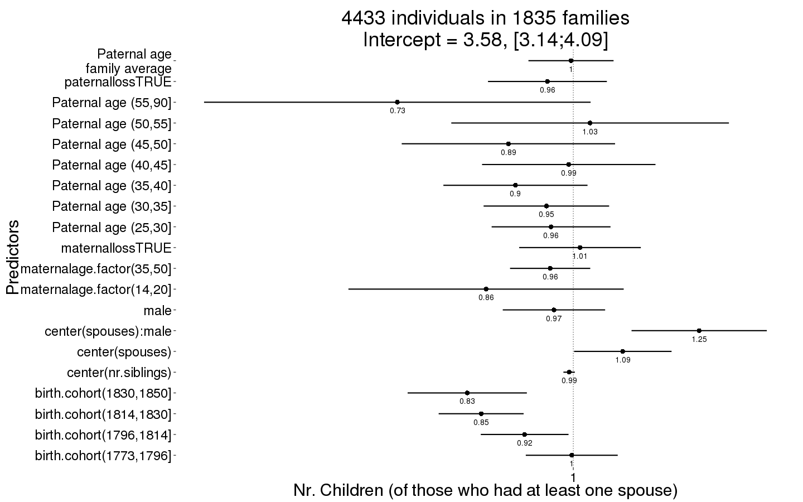
Children_boot = plot_factor_response(Children)
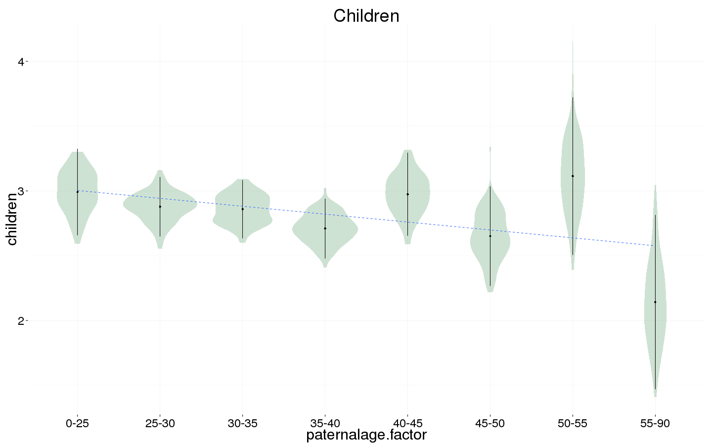
Number of children surviving first year
Children.surviving1y <- bglmer(
children.surviving1y ~ maternalage.factor + paternalloss + maternalloss + center(nr.siblings) + center(children) + birth.cohort + male +paternalage.mean + paternalage.factor + (1|idParents) + (1|idIndividu),
data= krmh.1, subset = children > 0 & byear < 1835,
family = 'poisson', control = control_defaults,
fixef.prior = normal() )
summary(Children.surviving1y)
## Cov prior : idIndividu ~ wishart(df = 3.5, scale = Inf, posterior.scale = cov, common.scale = TRUE)
## : idParents ~ wishart(df = 3.5, scale = Inf, posterior.scale = cov, common.scale = TRUE)
## Fixef prior: normal(sd = c(10, 2.5, ...), corr = c(0 ...), common.scale = FALSE)
## Prior dev : 95
##
## Generalized linear mixed model fit by maximum likelihood (Laplace
## Approximation) [bglmerMod]
## Family: poisson ( log )
## Formula:
## children.surviving1y ~ maternalage.factor + paternalloss + maternalloss +
## center(nr.siblings) + center(children) + birth.cohort + male +
## paternalage.mean + paternalage.factor + (1 | idParents) +
## (1 | idIndividu)
## Data: krmh.1
## Control: control_defaults
## Subset: children > 0 & byear < 1835
##
## AIC BIC logLik deviance df.resid
## 13826 13964 -6891 13782 3741
##
## Scaled residuals:
## Min 1Q Median 3Q Max
## -2.697 -0.647 0.058 0.628 3.705
##
## Random effects:
## Groups Name Variance Std.Dev.
## idIndividu (Intercept) 9.58e-05 0.00979
## idParents (Intercept) 4.84e-02 0.22003
## Number of obs: 3763, groups: idIndividu, 3763; idParents, 1735
##
## Fixed effects:
## Estimate Std. Error z value Pr(>|z|)
## (Intercept) 0.52307 0.05327 9.8 <2e-16 ***
## maternalage.factor(14,20] 0.21165 0.10279 2.1 0.039 *
## maternalage.factor(35,50] 0.03665 0.03189 1.1 0.250
## paternallossTRUE 0.09756 0.04567 2.1 0.033 *
## maternallossTRUE 0.02392 0.04739 0.5 0.614
## center(nr.siblings) 0.00280 0.00479 0.6 0.558
## center(children) 0.19793 0.00354 55.9 <2e-16 ***
## birth.cohort(1773,1796] 0.06609 0.03349 2.0 0.048 *
## birth.cohort(1796,1814] -0.04815 0.03323 -1.4 0.147
## birth.cohort(1814,1830] -0.45534 0.03446 -13.2 <2e-16 ***
## birth.cohort(1830,1850] -0.98353 0.06157 -16.0 <2e-16 ***
## male -0.02035 0.02025 -1.0 0.315
## paternalage.mean 0.03812 0.03366 1.1 0.257
## paternalage.factor(25,30] 0.04276 0.04454 1.0 0.337
## paternalage.factor(30,35] -0.00278 0.04768 -0.1 0.954
## paternalage.factor(35,40] -0.04535 0.05537 -0.8 0.413
## paternalage.factor(40,45] -0.08282 0.06675 -1.2 0.215
## paternalage.factor(45,50] -0.08395 0.08380 -1.0 0.316
## paternalage.factor(50,55] 0.17101 0.10260 1.7 0.096 .
## paternalage.factor(55,90] -0.26696 0.16208 -1.6 0.100 .
## ---
## Signif. codes: 0 '***' 0.001 '**' 0.01 '*' 0.05 '.' 0.1 ' ' 1
##
## Correlation of Fixed Effects:
## (Intr) m.(14, m.(35, ptTRUE mtTRUE cnt(.) cntr() b.(177 b.(179
## mtr.(14,20] -0.107
## mtr.(35,50] 0.209 -0.047
## ptrnllsTRUE 0.039 -0.049 0.045
## mtrnllsTRUE 0.014 -0.001 0.066 -0.006
## cntr(nr.sb) -0.048 -0.038 -0.065 0.160 0.146
## cntr(chldr) -0.334 0.038 0.004 -0.009 0.001 -0.007
## b.(1773,179 -0.364 -0.016 -0.040 0.002 0.005 0.070 0.013
## b.(1796,181 -0.381 -0.014 -0.034 0.018 0.025 0.079 0.037 0.625
## b.(1814,183 -0.378 -0.011 -0.027 0.014 0.035 0.050 0.065 0.585 0.634
## b.(1830,185 -0.184 -0.009 -0.027 0.026 0.015 0.034 0.037 0.330 0.345
## male -0.172 -0.012 -0.026 -0.016 0.022 0.008 -0.068 0.006 -0.013
## paternlg.mn 0.355 -0.105 0.497 0.126 0.170 -0.133 -0.005 -0.012 -0.004
## ptr.(25,30] -0.711 0.049 -0.130 -0.047 -0.050 0.014 0.031 -0.009 -0.018
## ptr.(30,35] -0.750 0.098 -0.271 -0.089 -0.077 0.029 0.033 -0.014 -0.011
## ptr.(35,40] -0.716 0.118 -0.432 -0.120 -0.105 0.011 0.047 -0.019 -0.016
## ptr.(40,45] -0.661 0.122 -0.522 -0.142 -0.133 0.020 0.027 -0.005 -0.021
## ptr.(45,50] -0.586 0.118 -0.533 -0.115 -0.119 0.040 0.032 0.001 -0.025
## ptr.(50,55] -0.522 0.116 -0.507 -0.142 -0.127 0.034 0.022 -0.016 -0.037
## ptr.(55,90] -0.385 0.085 -0.398 -0.118 -0.088 0.050 0.024 0.006 -0.014
## b.(181 b.(183 male ptrnl. p.(25, p.(30, p.(35, p.(40, p.(45,
## mtr.(14,20]
## mtr.(35,50]
## ptrnllsTRUE
## mtrnllsTRUE
## cntr(nr.sb)
## cntr(chldr)
## b.(1773,179
## b.(1796,181
## b.(1814,183
## b.(1830,185 0.354
## male 0.025 -0.002
## paternlg.mn 0.040 0.030 0.003
## ptr.(25,30] -0.018 -0.021 -0.005 -0.223
## ptr.(30,35] -0.011 -0.048 0.018 -0.404 0.799
## ptr.(35,40] -0.029 -0.052 0.001 -0.536 0.737 0.817
## ptr.(40,45] -0.035 -0.042 0.020 -0.627 0.654 0.762 0.813
## ptr.(45,50] -0.046 -0.037 0.004 -0.665 0.559 0.675 0.743 0.766
## ptr.(50,55] -0.045 -0.039 0.008 -0.680 0.487 0.609 0.683 0.715 0.700
## ptr.(55,90] -0.037 -0.019 -0.010 -0.575 0.340 0.442 0.508 0.540 0.535
## p.(50,
## mtr.(14,20]
## mtr.(35,50]
## ptrnllsTRUE
## mtrnllsTRUE
## cntr(nr.sb)
## cntr(chldr)
## b.(1773,179
## b.(1796,181
## b.(1814,183
## b.(1830,185
## male
## paternlg.mn
## ptr.(25,30]
## ptr.(30,35]
## ptr.(35,40]
## ptr.(40,45]
## ptr.(45,50]
## ptr.(50,55]
## ptr.(55,90] 0.538
Children.surviving1y_coefs = fortify_mine(Children.surviving1y)
plot_fortified_mer(Children.surviving1y_coefs, "Nr. Children who survive first year (of those who survived infancy)")
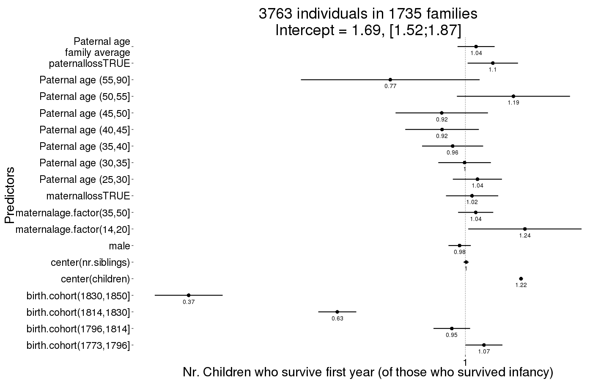
Children.surviving1y_boot = plot_factor_response(Children.surviving1y)
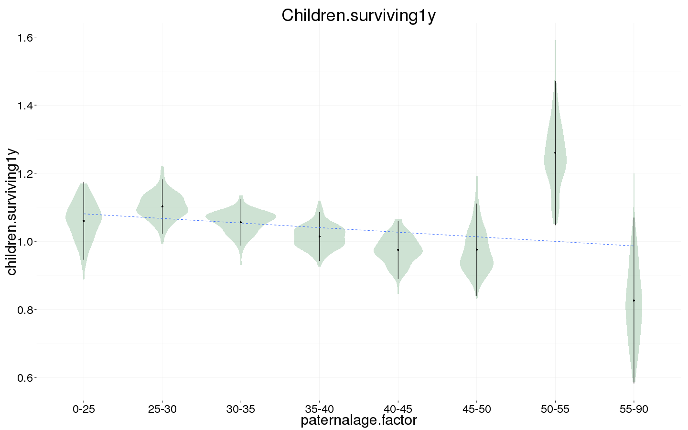
Number of grandchildren
Grandchildren.per.Child <- bglmer(
grandchildren ~ maternalage.factor + paternalloss + maternalloss + center(nr.siblings) + center(children) + birth.cohort + male +paternalage.mean + paternalage.factor + (1|idParents) + (1|idIndividu),
data= krmh.1, subset = children > 0 & byear < 1810,
family = 'poisson', control = control_defaults,
fixef.prior = normal() )
summary(Grandchildren.per.Child)
## Cov prior : idIndividu ~ wishart(df = 3.5, scale = Inf, posterior.scale = cov, common.scale = TRUE)
## : idParents ~ wishart(df = 3.5, scale = Inf, posterior.scale = cov, common.scale = TRUE)
## Fixef prior: normal(sd = c(10, 2.5, ...), corr = c(0 ...), common.scale = FALSE)
## Prior dev : 73
##
## Generalized linear mixed model fit by maximum likelihood (Laplace
## Approximation) [bglmerMod]
## Family: poisson ( log )
## Formula:
## grandchildren ~ maternalage.factor + paternalloss + maternalloss +
## center(nr.siblings) + center(children) + birth.cohort + male +
## paternalage.mean + paternalage.factor + (1 | idParents) +
## (1 | idIndividu)
## Data: krmh.1
## Control: control_defaults
## Subset: children > 0 & byear < 1810
##
## AIC BIC logLik deviance df.resid
## 12135 12247 -6048 12095 1938
##
## Scaled residuals:
## Min 1Q Median 3Q Max
## -1.5132 -0.5849 0.0528 0.2195 0.6413
##
## Random effects:
## Groups Name Variance Std.Dev.
## idIndividu (Intercept) 0.9936 0.997
## idParents (Intercept) 0.0849 0.291
## Number of obs: 1958, groups: idIndividu, 1958; idParents, 977
##
## Fixed effects:
## Estimate Std. Error z value Pr(>|z|)
## (Intercept) 0.85184 0.12898 6.60 4.0e-11 ***
## maternalage.factor(14,20] 0.22610 0.27778 0.81 0.416
## maternalage.factor(35,50] -0.04445 0.08404 -0.53 0.597
## paternallossTRUE -0.09120 0.11917 -0.77 0.444
## maternallossTRUE 0.06529 0.11839 0.55 0.581
## center(nr.siblings) -0.02246 0.01174 -1.91 0.056 .
## center(children) 0.24408 0.00977 24.99 < 2e-16 ***
## birth.cohort(1773,1796] 0.03347 0.06741 0.50 0.620
## birth.cohort(1796,1814] -0.38378 0.07125 -5.39 7.2e-08 ***
## male -0.08541 0.05309 -1.61 0.108
## paternalage.mean -0.05116 0.08753 -0.58 0.559
## paternalage.factor(25,30] -0.06598 0.11851 -0.56 0.578
## paternalage.factor(30,35] 0.03975 0.12544 0.32 0.751
## paternalage.factor(35,40] 0.03588 0.14568 0.25 0.805
## paternalage.factor(40,45] 0.02585 0.17651 0.15 0.884
## paternalage.factor(45,50] 0.15191 0.22014 0.69 0.490
## paternalage.factor(50,55] 0.20359 0.27716 0.73 0.463
## paternalage.factor(55,90] -0.04327 0.45882 -0.09 0.925
## ---
## Signif. codes: 0 '***' 0.001 '**' 0.01 '*' 0.05 '.' 0.1 ' ' 1
##
## Correlation of Fixed Effects:
## (Intr) m.(14, m.(35, ptTRUE mtTRUE cnt(.) cntr() b.(177 b.(179
## mtr.(14,20] -0.083
## mtr.(35,50] 0.222 -0.043
## ptrnllsTRUE 0.034 -0.044 0.027
## mtrnllsTRUE 0.035 -0.006 0.090 0.000
## cntr(nr.sb) -0.054 -0.032 -0.067 0.178 0.167
## cntr(chldr) -0.255 0.029 0.008 -0.006 -0.010 -0.014
## b.(1773,179 -0.289 -0.012 -0.055 0.020 -0.006 0.084 0.019
## b.(1796,181 -0.273 -0.011 -0.044 0.029 0.026 0.092 0.030 0.572
## male -0.180 0.001 -0.015 -0.021 0.014 0.009 -0.067 -0.002 -0.009
## paternlg.mn 0.418 -0.113 0.504 0.102 0.184 -0.144 0.010 -0.032 -0.015
## ptr.(25,30] -0.759 0.004 -0.136 -0.047 -0.057 0.008 -0.018 -0.015 -0.022
## ptr.(30,35] -0.808 0.063 -0.263 -0.083 -0.084 0.027 -0.015 -0.012 -0.014
## ptr.(35,40] -0.775 0.087 -0.428 -0.099 -0.121 0.013 -0.005 -0.024 -0.024
## ptr.(40,45] -0.719 0.098 -0.505 -0.130 -0.156 0.010 -0.011 -0.009 -0.031
## ptr.(45,50] -0.639 0.098 -0.537 -0.112 -0.131 0.032 0.001 -0.001 -0.042
## ptr.(50,55] -0.564 0.096 -0.493 -0.123 -0.135 0.032 -0.018 -0.009 -0.039
## ptr.(55,90] -0.400 0.071 -0.394 -0.108 -0.090 0.064 -0.006 0.020 -0.005
## male ptrnl. p.(25, p.(30, p.(35, p.(40, p.(45, p.(50,
## mtr.(14,20]
## mtr.(35,50]
## ptrnllsTRUE
## mtrnllsTRUE
## cntr(nr.sb)
## cntr(chldr)
## b.(1773,179
## b.(1796,181
## male
## paternlg.mn -0.001
## ptr.(25,30] -0.009 -0.241
## ptr.(30,35] 0.006 -0.427 0.799
## ptr.(35,40] 0.000 -0.564 0.739 0.823
## ptr.(40,45] 0.022 -0.650 0.657 0.764 0.816
## ptr.(45,50] -0.001 -0.674 0.565 0.681 0.752 0.767
## ptr.(50,55] 0.014 -0.683 0.484 0.605 0.680 0.706 0.686
## ptr.(55,90] -0.018 -0.550 0.326 0.425 0.491 0.518 0.511 0.495
Grandchildren.per.Child_coefs = fortify_mine(Grandchildren.per.Child)
plot_fortified_mer(Grandchildren.per.Child_coefs, "Nr. of grandchildren per child")
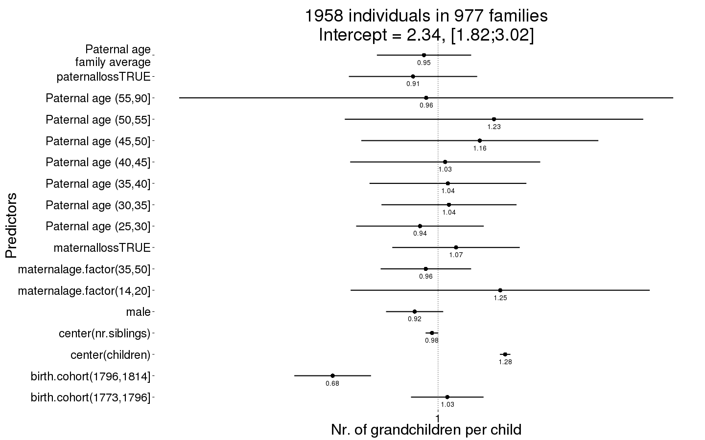
Grandchildren.per.Child_boot = plot_factor_response(Grandchildren.per.Child)
## Warning in bootMer(fit, mypred, nsim = 100, verbose = T, parallel =
## "multicore", : some bootstrap runs failed (100/100)
## Error in eval(expr, envir, enclos): object 'value' not found
Any surviving children
Any_surviving_children <- bglmer(
any_surviving_children ~ maternalage.factor + paternalloss + maternalloss + center(nr.siblings) + birth.cohort + male + paternalage.mean + paternalage.factor + (1|idParents),
data= krmh.1, subset = byear < 1835,
family = 'binomial', control = control_defaults,
fixef.prior = normal() )
summary(Any_surviving_children)
## Cov prior : idParents ~ wishart(df = 3.5, scale = Inf, posterior.scale = cov, common.scale = TRUE)
## Fixef prior: normal(sd = c(10, 2.5, ...), corr = c(0 ...), common.scale = FALSE)
## Prior dev : 75
##
## Generalized linear mixed model fit by maximum likelihood (Laplace
## Approximation) [bglmerMod]
## Family: binomial ( logit )
## Formula: any_surviving_children ~ maternalage.factor + paternalloss +
## maternalloss + center(nr.siblings) + birth.cohort + male +
## paternalage.mean + paternalage.factor + (1 | idParents)
## Data: krmh.1
## Control: control_defaults
## Subset: byear < 1835
##
## AIC BIC logLik deviance df.resid
## 11422 11565 -5691 11382 9429
##
## Scaled residuals:
## Min 1Q Median 3Q Max
## -1.049 -0.673 -0.566 1.187 3.036
##
## Random effects:
## Groups Name Variance Std.Dev.
## idParents (Intercept) 0.184 0.428
## Number of obs: 9449, groups: idParents, 2186
##
## Fixed effects:
## Estimate Std. Error z value Pr(>|z|)
## (Intercept) -0.6312 0.1158 -5.45 5.0e-08 ***
## maternalage.factor(14,20] -0.0811 0.2317 -0.35 0.72643
## maternalage.factor(35,50] -0.0904 0.0704 -1.28 0.19956
## paternallossTRUE -0.2396 0.1028 -2.33 0.01974 *
## maternallossTRUE -0.5634 0.1045 -5.39 7.0e-08 ***
## center(nr.siblings) -0.0424 0.0105 -4.04 5.5e-05 ***
## birth.cohort(1773,1796] 0.2808 0.0778 3.61 0.00031 ***
## birth.cohort(1796,1814] 0.3040 0.0759 4.00 6.2e-05 ***
## birth.cohort(1814,1830] -0.0582 0.0757 -0.77 0.44174
## birth.cohort(1830,1850] -0.8297 0.1294 -6.41 1.5e-10 ***
## male -0.2269 0.0464 -4.89 9.9e-07 ***
## paternalage.mean 0.1036 0.0756 1.37 0.17046
## paternalage.factor(25,30] 0.0397 0.1032 0.38 0.70091
## paternalage.factor(30,35] -0.0611 0.1095 -0.56 0.57685
## paternalage.factor(35,40] -0.1729 0.1260 -1.37 0.17008
## paternalage.factor(40,45] -0.2609 0.1513 -1.73 0.08448 .
## paternalage.factor(45,50] -0.2792 0.1871 -1.49 0.13557
## paternalage.factor(50,55] -0.2196 0.2403 -0.91 0.36067
## paternalage.factor(55,90] -0.6300 0.3384 -1.86 0.06265 .
## ---
## Signif. codes: 0 '***' 0.001 '**' 0.01 '*' 0.05 '.' 0.1 ' ' 1
##
## Correlation of Fixed Effects:
## (Intr) m.(14, m.(35, ptTRUE mtTRUE cnt(.) b.(177 b.(179 b.(181
## mtr.(14,20] -0.143
## mtr.(35,50] 0.199 -0.031
## ptrnllsTRUE 0.029 -0.018 0.061
## mtrnllsTRUE 0.011 -0.006 0.069 0.018
## cntr(nr.sb) -0.046 -0.025 -0.025 0.168 0.185
## b.(1773,179 -0.366 0.012 -0.043 -0.001 0.013 0.049
## b.(1796,181 -0.399 0.003 -0.043 0.009 0.029 0.059 0.609
## b.(1814,183 -0.384 0.009 -0.022 0.017 0.050 0.050 0.597 0.639
## b.(1830,185 -0.209 0.007 -0.036 0.015 0.029 0.043 0.353 0.370 0.386
## male -0.215 0.012 -0.011 0.000 -0.004 0.008 -0.002 0.005 0.029
## paternlg.mn 0.390 -0.087 0.471 0.136 0.179 -0.101 -0.021 -0.018 0.028
## ptr.(25,30] -0.743 0.095 -0.115 -0.039 -0.041 0.013 -0.013 0.002 -0.020
## ptr.(30,35] -0.781 0.124 -0.248 -0.078 -0.079 0.013 -0.020 -0.003 -0.024
## ptr.(35,40] -0.753 0.133 -0.401 -0.112 -0.114 -0.004 -0.018 -0.005 -0.033
## ptr.(40,45] -0.695 0.133 -0.492 -0.141 -0.128 -0.001 -0.017 -0.018 -0.041
## ptr.(45,50] -0.625 0.123 -0.510 -0.146 -0.124 0.015 -0.011 -0.007 -0.045
## ptr.(50,55] -0.537 0.108 -0.481 -0.139 -0.135 0.018 -0.013 -0.013 -0.045
## ptr.(55,90] -0.438 0.089 -0.408 -0.134 -0.109 0.045 -0.003 -0.006 -0.048
## b.(183 male ptrnl. p.(25, p.(30, p.(35, p.(40, p.(45, p.(50,
## mtr.(14,20]
## mtr.(35,50]
## ptrnllsTRUE
## mtrnllsTRUE
## cntr(nr.sb)
## b.(1773,179
## b.(1796,181
## b.(1814,183
## b.(1830,185
## male 0.022
## paternlg.mn 0.016 -0.009
## ptr.(25,30] -0.017 0.000 -0.219
## ptr.(30,35] -0.041 0.013 -0.403 0.792
## ptr.(35,40] -0.042 0.015 -0.543 0.733 0.817
## ptr.(40,45] -0.031 0.022 -0.631 0.652 0.760 0.813
## ptr.(45,50] -0.034 0.011 -0.676 0.564 0.684 0.754 0.773
## ptr.(50,55] -0.033 0.011 -0.665 0.470 0.590 0.667 0.696 0.686
## ptr.(55,90] -0.020 0.002 -0.627 0.367 0.480 0.554 0.588 0.588 0.558
Any_surviving_children_coefs = fortify_mine(Any_surviving_children)
plot_fortified_mer(Any_surviving_children_coefs, "Any surviving children")
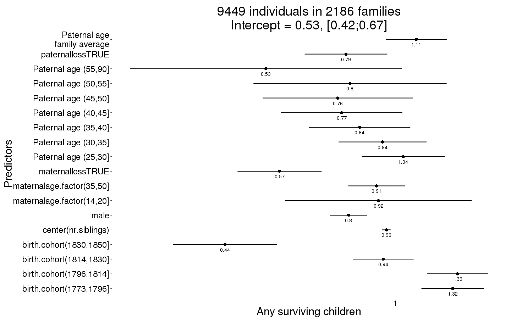
Any_surviving_children_boot = plot_factor_response(Any_surviving_children)
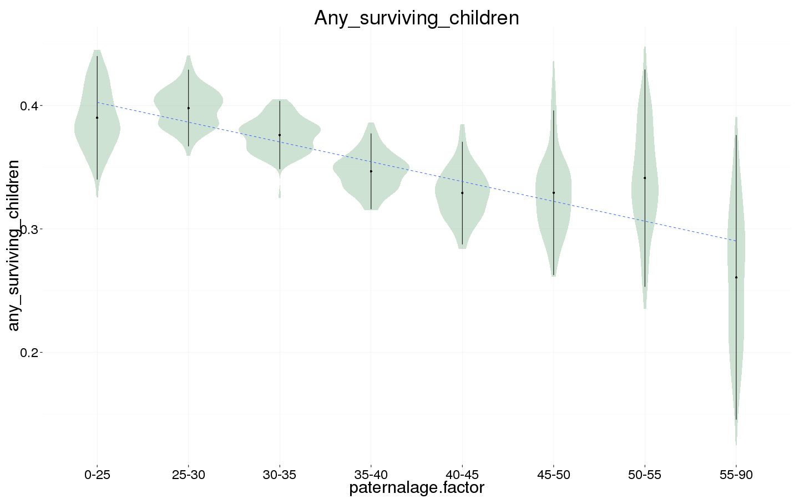